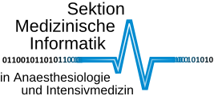
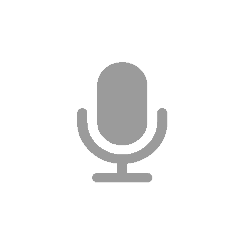

 Anästhesie Audiolog™️
Anleitung - Klick Mich
Erfassung anästhesierelevanter Zeitmarker mittels Spracherkennung.
Läuft nur mit dem Chrome Browser (Android, Mac, PC)!
Internetverbindung erforderlich!
Spracheingabe starten mit:
audiolog ...
